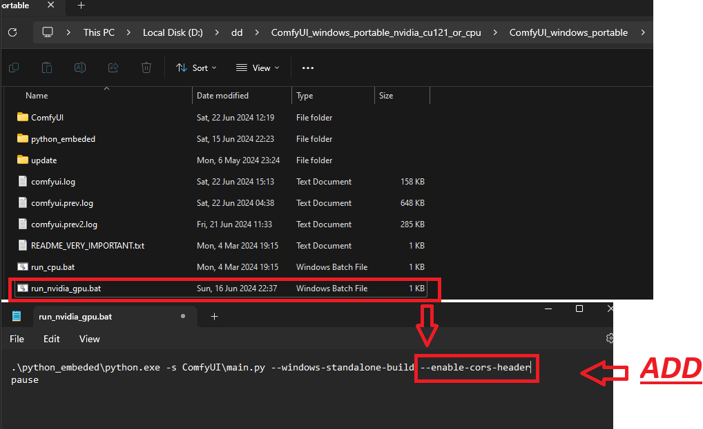
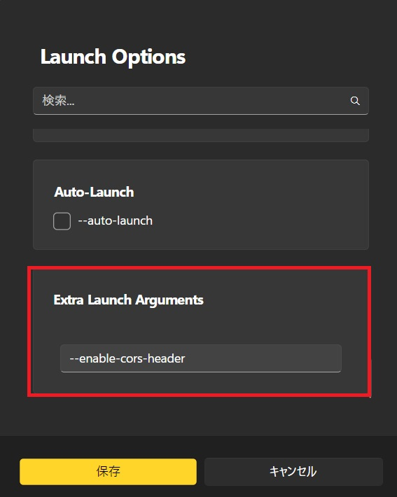
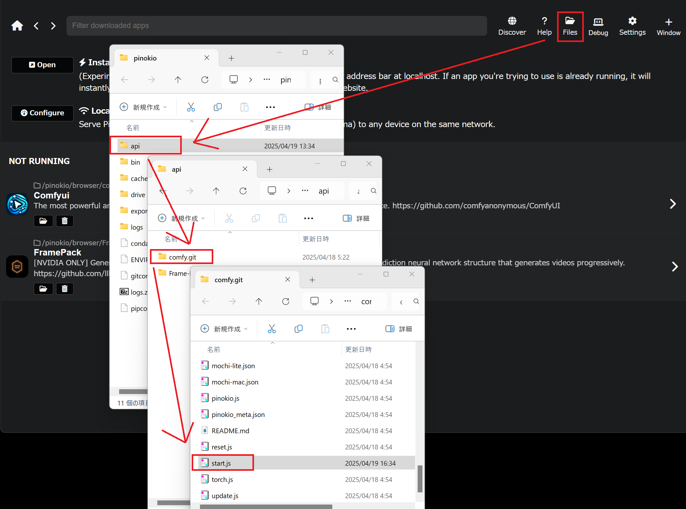

This guide explains how to set up the Comfyui API.
Edit 'run_nvidia_gpu.bat' file in the Comfyui folder to set environment variables.
The configuration file is as follows
--enable-cors-header
Note: When launching from Stability Matrix, set this in Extra Launch Arguments.
--enable-cors-header
Pinokioではstart.jsを編集して--enable-cors-headerを追加します。
Files -> api -> comfy.git -> start.jsを開きます。
--enable-cors-header